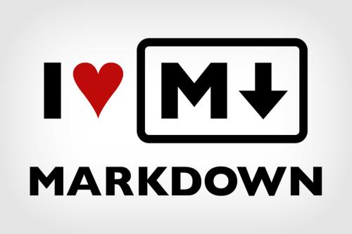

中国共产党要始终代表中国先进生产力的发展要求；中国共产党要始终代表中国先进文化的前进方向； 中国共产党要始终代表中国最广大人民的根本利益。
中共中央总书记胡锦涛在2003年7月28日的讲话中提出“坚持以人为本，树立全面、协调、可持续的发展观，促进经济社会和人的全面发展”，按照“统筹城乡发展、统筹区域发展、统筹经济社会发展、统筹人与自然和谐发展、统筹国内发展和对外开放”的要求推进各项事业的改革和发展的方法论--科学发展观，也是中国共产党的重大战略思想。
“中国梦”的核心目标也可以概括为“两个一百年”的目标，也就是：到2021年中国共产党成立100周年和2049年中华人民共和国成立100周年时，逐步并最终顺利实现中华民族的伟大复兴，具体表现是国家富强、民族振兴、人民幸福，实现途径是走中国特色的社会主义道路、坚持中国特色社会主义理论体系、弘扬民族精神、凝聚中国力量，实施手段是政治、经济、文化、社会、生态文明五位一体建设。
中国陆地面积约960万平方千米，东部和南部大陆海岸线1.8万多千米，内海和边海的水域面积约470多万平方千米。海域分布有大小岛屿7600多个，其中台湾岛最大，面积35798平方千米。中国同14国接壤，与8国海上相邻。省级行政区划为23个省、5个自治区、4个直辖市、2个特别行政区。
